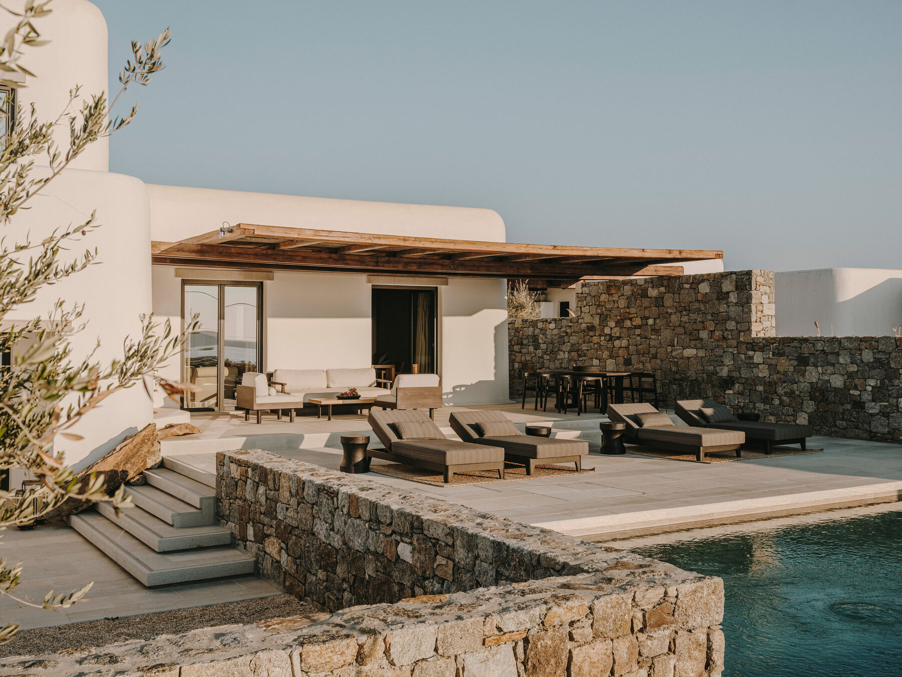
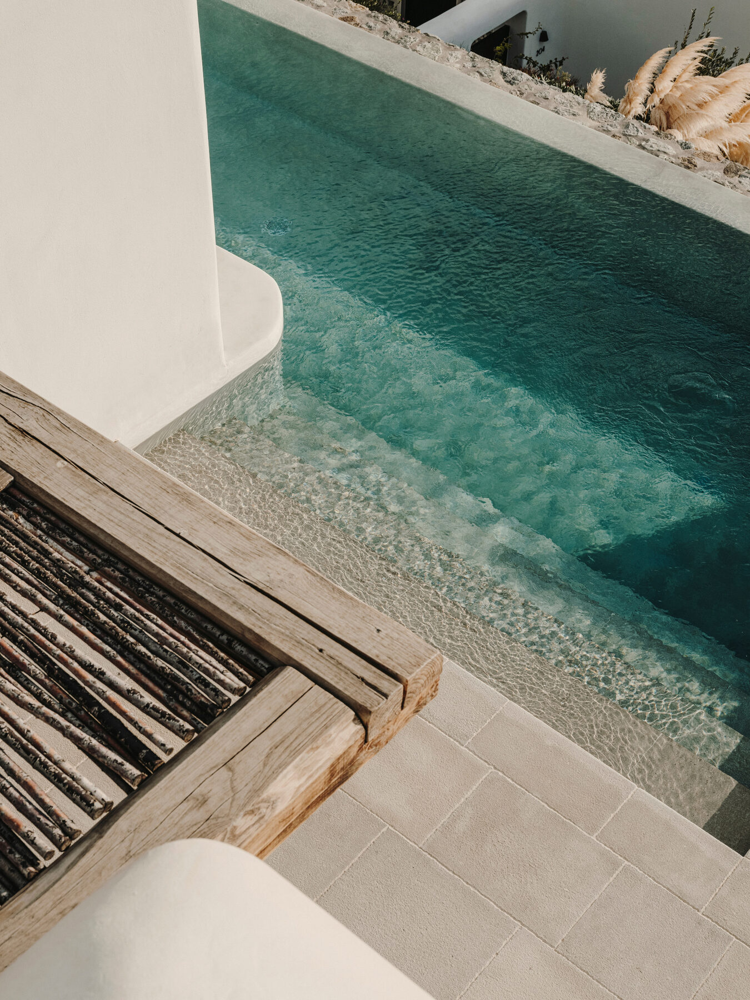
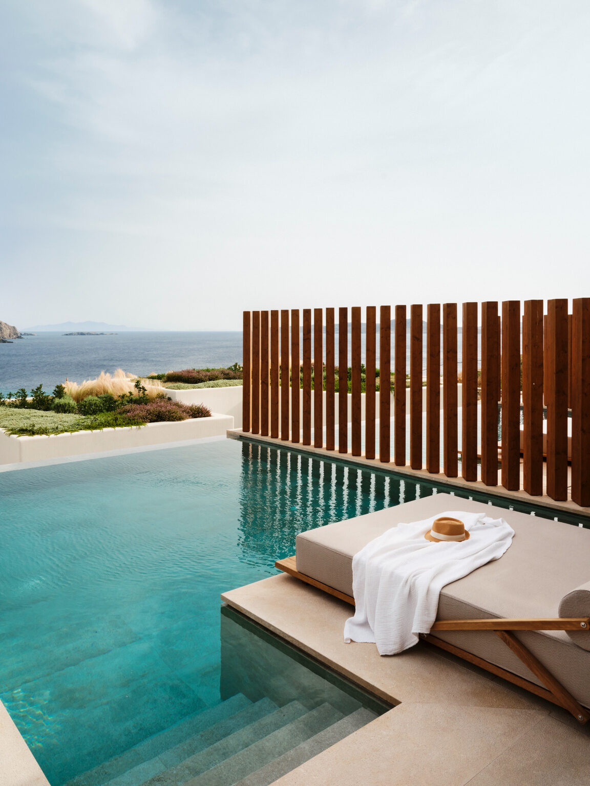
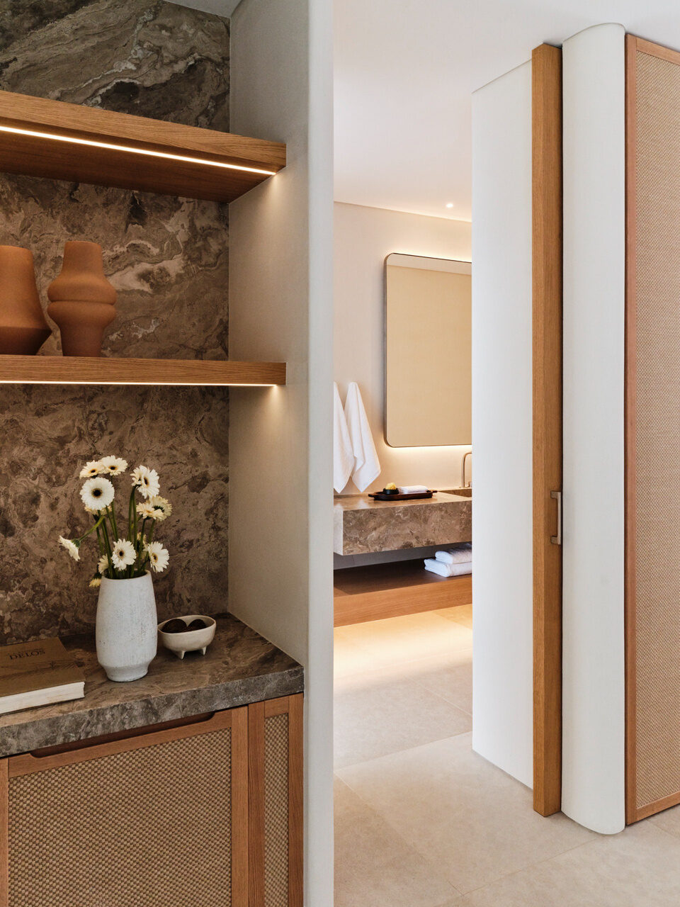
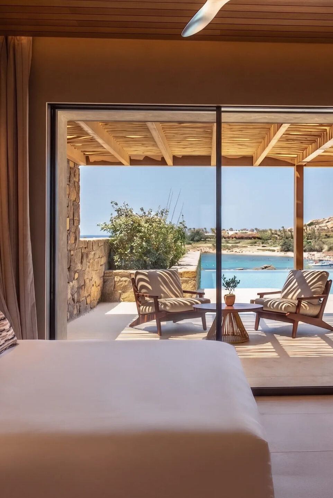
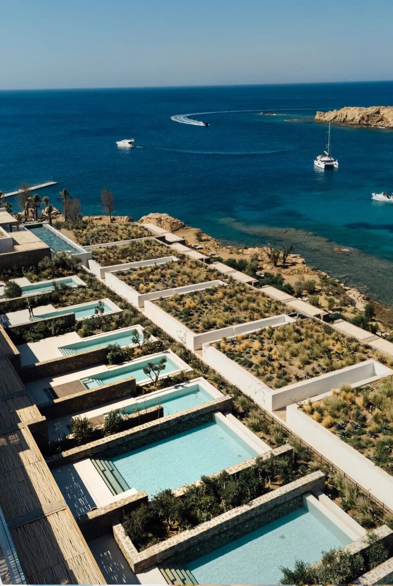
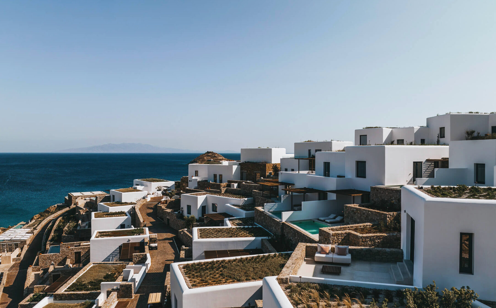
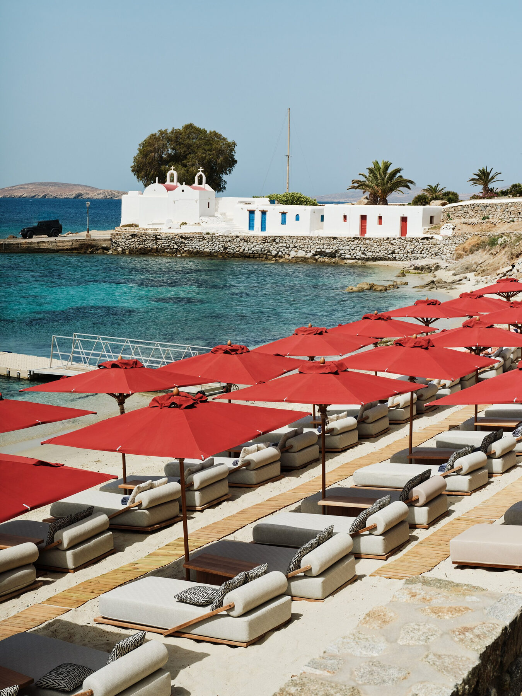

The Greece Collection · Issue No. 01
03The island that always has another side to discover.
Whether it's Scorpios, Alemagou, or Principote, dedicate an afternoon to Mykonos' beach club culture.
One of the island's classic golden-hour experiences.
Wander the maze of whitewashed streets before a late dinner.
The best way to experience Mykonos from the water.
Renting a car or ATV makes exploring easy, but boat taxis are one of Mykonos' best-kept secrets for reaching the island's beach clubs and southern coastline. If you're combining Mykonos with nearby islands, helicopter transfers are worth considering for both convenience and the experience.
Mykonos surprised me more than any island I visited. The hotels exceeded every expectation, the service was exceptional, and the island's natural beauty is often overlooked. If you balance slow mornings with lively afternoons and evenings, you'll discover why Mykonos is far more sophisticated than its reputation suggests.
The best choice for nightlife, restaurants, and first-time visitors.
Home to many of the island's most luxurious hotels and iconic beach clubs.
A quieter side of Mykonos with beautiful sunsets and easy access to the island's highlights.

The quieter side of Mykonos
Kalesma offers a different side of Mykonos. Rather than chasing the island's energy, it creates its own. Inspired by a traditional Cycladic village, the property pairs understated architecture, thoughtful service, and panoramic Aegean views to create one of Greece's most refined luxury stays.
Don't overlook the Deluxe Rooms. They're surprisingly spacious and private, and if you don't need a private pool, they offer excellent value.
Reserve dinner at Pere Ubu. It's one of the best places on the island to watch the sun disappear into the Aegean.
Spend an evening at the hotel. Kalesma is at its best when the light softens and the island begins to quiet down.
Kalesma completely changed the way I think about Mykonos. It proves the island can be relaxed, design-forward, and deeply peaceful without losing the sense of place that makes it so iconic.


Beachfront, perfected
Unlike most of Mykonos' luxury hotels perched high above the sea, Bill & Coo Coast brings you directly to the shoreline. Elegant beachfront suites, exceptional dining, and relaxed service create one of the island's most complete resort experiences.
Enjoy the complimentary beach club. Reserved loungers, calm water, and easy swimming make it one of the most relaxing beach days on Mykonos.
Compare both Bill & Coo properties. The Coast is my choice for a true beachfront stay, while Bill & Coo Suites is worth considering if being closer to Mykonos Town or traveling with family is a priority.
Take a boat transfer to Scorpios. Skip the summer traffic and take a private boat transfer to nearby Scorpios and other popular beach clubs.
Most luxury hotels on Mykonos ask you to admire the sea from above. Bill & Coo Coast lets you live beside it. For travelers who prioritize the beach just as much as great food and beautiful design, it's one of the island's most complete stays.


Mykonos' most exciting new resort
Fouquet's brings the energy of Mykonos' south coast together with the comfort of a true luxury resort. Spacious accommodations, standout dining, and polished service make it an ideal base for travelers who want both beach clubs and resort time.
Have dinner at ZUMA. It's one of the strongest dining experiences on Mykonos and worth planning an evening around, even if you're staying elsewhere.
Check out the underground sports court. Fouquet's has a massive subterranean basketball court that's unlike anything you'll find at most luxury resorts.
Walk to Paraga Beach or Scorpios. Being able to leave the car behind is one of the hotel's biggest advantages.
Fouquet's is one of my favorite recommendations for travelers who want the energy of Mykonos' south coast without sacrificing the comforts of a true luxury resort. I had the opportunity to tour the property while it was still under construction, so returning after it opened was especially rewarding. The finished resort exceeded even those early expectations.


A new era of Mykonos
Cali has brought a fresh perspective to luxury on Mykonos. Dramatic hillside architecture, the island's largest infinity pools, and a private beach create a resort that feels contemporary while remaining deeply connected to its surroundings.
Plan a full day at the resort. The infinity pool and private beach deserve more than just an afternoon.
Don't skip the gym. Cali had the most impressive fitness facility I saw in all of the Cyclades — it even has padel and tennis courts.
Day trip to Tinos. Have the hotel charter you a private boat to see the beautiful villages of nearby Tinos.
Cali feels different from anywhere else on Mykonos. It has the energy of a destination resort with the design sensibility of a boutique hotel, making it one of the island's most exciting new openings.
How I'd spend three unforgettable days on Greece's most glamorous island.

Ease into Mykonos with a slow afternoon at your hotel. Whether you're relaxing by your private pool or heading straight to the beach, resist the urge to pack your schedule. As the sun begins to set, wander the whitewashed streets of Mykonos Town before enjoying a long dinner and drinks beneath the stars.
Start with a slow lunch at Alemagou, letting the afternoon unfold without watching the clock. Later, take a boat transfer to Scorpios to beat the traffic and arrive by sea. Stay through sunset before heading back to Mykonos Town for dinner or cocktails.
Slow things down. Charter a private boat to quieter coves, explore Ano Mera, or spend one last afternoon enjoying your hotel instead of rushing to another beach club. End your trip with sunset overlooking the Aegean.
My favorite Mykonos itineraries never try to do everything. Pick one incredible beach club, one unforgettable dinner, and leave plenty of time to enjoy your hotel.